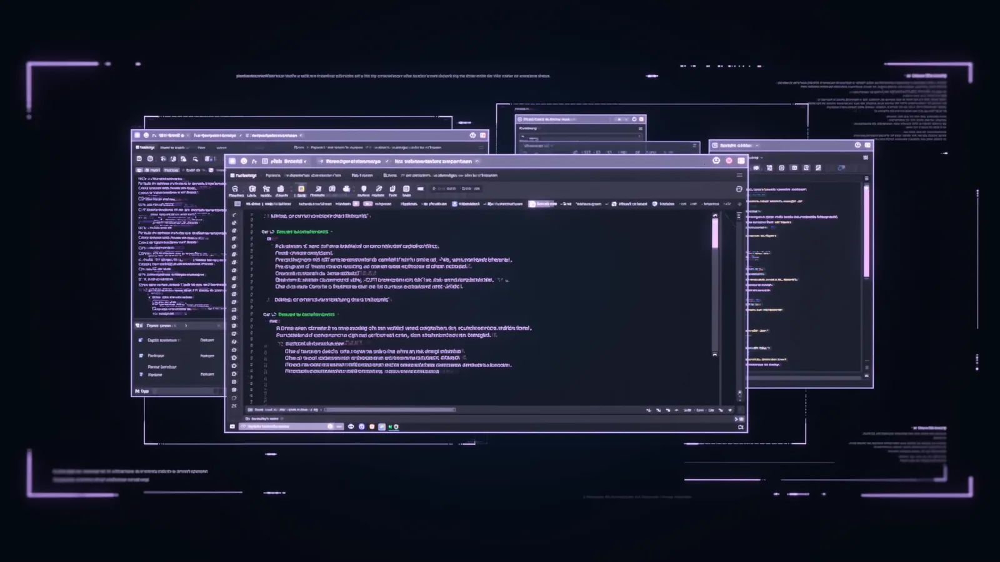

Llegué sabiendo programar, pero no cómo trabajar con IA de forma profesional. Hoy entrego proyectos completos en la mitad del tiempo y mi equipo me pidió liderar la adopción de Claude Code.

Un programa profesional que te transforma en un desarrollador certificado, capaz de construir proyectos reales con Claude Code de Anthropic e inteligencia artificial.
La oportunidad
Claude Code convierte a un desarrollador en un equipo: entiende repositorios completos, escribe y prueba código, automatiza procesos y ejecuta tareas complejas de principio a fin. Dominarlo con respaldo de una certificación es hoy una ventaja profesional concreta.
Una formación profesional de cuatro meses, con sesiones semanales en vivo, proyectos prácticos revisados por instructores y una ruta de preparación para aprobar la certificación en Claude Code con acreditación por Anthropic.
Para profesionales que quieren pasar de usar IA a construir con ella y demostrarlo con una credencial reconocida.
El poder de Claude Code
El programa se organiza alrededor de lo que el mercado espera de un desarrollador asistido por IA: construir, automatizar y demostrarlo.
Construye software real desde la terminal con un agente que entiende tu repositorio completo, escribe, refactoriza y prueba código a nivel profesional.
Diseña flujos de trabajo con agentes, Model Context Protocol e integraciones que ejecutan tareas complejas de principio a fin, con precisión y velocidad.
Valida tu dominio con una certificación reconocida en el ecosistema de Anthropic y posiciónate como profesional de IA ante las empresas.
Estructura del programa
Aprendizaje progresivo, proyectos prácticos y acompañamiento de instructores en cada etapa, hasta el día del examen.
Mes 1
Domina Claude Code desde la terminal: contexto, prompts de ingeniería, gestión de repositorios y buenas prácticas de un desarrollador asistido por IA.
Mes 2
Construye aplicaciones completas con arquitectura, pruebas y despliegue. Cada proyecto se revisa con feedback directo de instructores.
Mes 3
Diseña agentes y flujos automatizados conectados a herramientas reales mediante Model Context Protocol, integraciones y pipelines.
Mes 4
Guía de examen, simulacros y sesiones de refuerzo con instructores. Te acompañamos hasta que apruebes tu certificación en Claude Code.
Transformación profesional
Comprendes cómo trabaja un desarrollador asistido por IA y ejecutas tus primeras tareas reales con Claude Code.
Desarrollas proyectos completos, automatizas procesos y acumulas evidencia profesional en tu portafolio.
Apruebas tu certificación, obtienes acreditación por Anthropic y te posicionas como talento IA ante empresas.
Beneficios incluidos
Sesiones en vivo cada semana con práctica guiada y resolución de dudas.
Acompañamiento personalizado de expertos durante todo el programa.
Material de preparación, simulacros y estrategia para aprobar.
Proyectos reales que se convierten en tu portafolio profesional.
Programa de vinculación con empresas que adoptan IA.
Certificación respaldada por el creador de Claude.
Red de profesionales certificados para compartir proyectos y oportunidades.
Conecta con empresas, instructores y colegas.
Inversión
La certificación en Claude Code te posiciona en una de las especialidades con mayor demanda. AI LAB te acompaña hasta que apruebes.
Si necesitas más preparación, seguimos contigo. Sin costo adicional.
Evidencia verificable de lo que sabes construir con IA.
Programa de talento IA para conectar con oportunidades laborales.
Acreditación por Anthropic, reconocida en el ecosistema profesional de IA.
| Curso en línea convencional | Certificación AI LAB | |
|---|---|---|
| Formato | Videos grabados | Sesiones semanales en vivo |
| Acompañamiento | Foros o ninguno | Instructores durante 4 meses |
| Resultado | Constancia de participación | Certificación con acreditación por Anthropic |
| Proyectos | Ejercicios aislados | Portafolio de proyectos reales |
| Si no apruebas | Termina el acceso | Soporte hasta aprobar |
| Después del programa | Nada | Comunidad, networking y posicionamiento |
Certificación en Claude Code · 4 meses
Inversión total del programa
Testimonios
Llegué sabiendo programar, pero no cómo trabajar con IA de forma profesional. Hoy entrego proyectos completos en la mitad del tiempo y mi equipo me pidió liderar la adopción de Claude Code.
La guía de examen y los simulacros hicieron la diferencia. Aprobé a la primera y la acreditación abrió conversaciones con empresas que antes no me respondían.
Venía de producto, no de código. Con el soporte de los instructores construí un agente que automatiza reportes para mi área. Ahora coordino proyectos de IA en la empresa.
Pasé de analizar datos a desarrollar soluciones con IA. El programa de posicionamiento de talento me conectó con la empresa donde hoy trabajo como AI Developer.
Preguntas frecuentes
AI LAB te brinda soporte hasta que apruebes exitosamente: acompañamiento de instructores, material de preparación y sesiones de refuerzo sin costo adicional.
Tu certificación está respaldada por Anthropic, la empresa creadora de Claude, lo que le da credibilidad y reconocimiento dentro del ecosistema profesional de IA.
Cada semana tienes una sesión en vivo con instructores: conceptos, ejercicios prácticos y resolución de dudas. Las sesiones quedan grabadas para repasarlas.
Presentamos tu perfil certificado y tu portafolio ante empresas que adoptan inteligencia artificial, para conectarte con oportunidades reales.
El resultado
Cupo limitado por generación. Asegura tu lugar y empieza a construir con Claude Code.